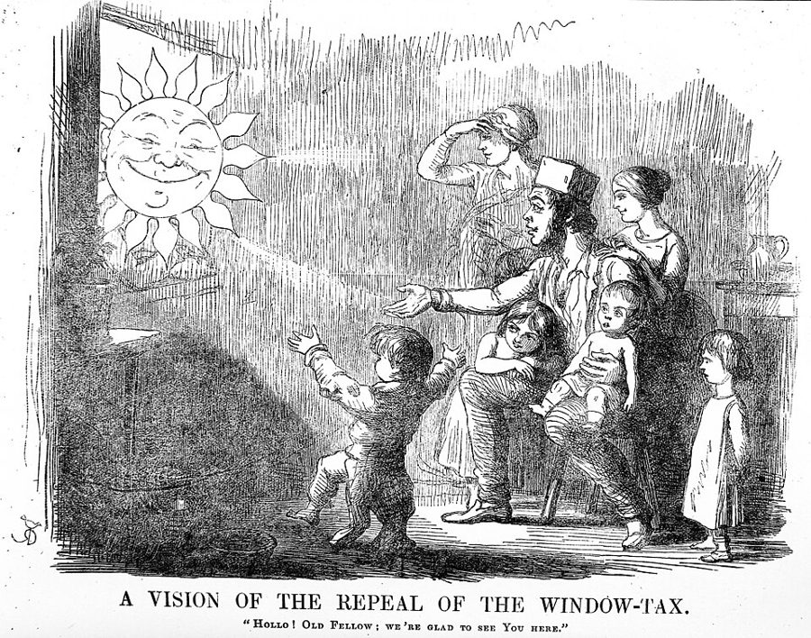
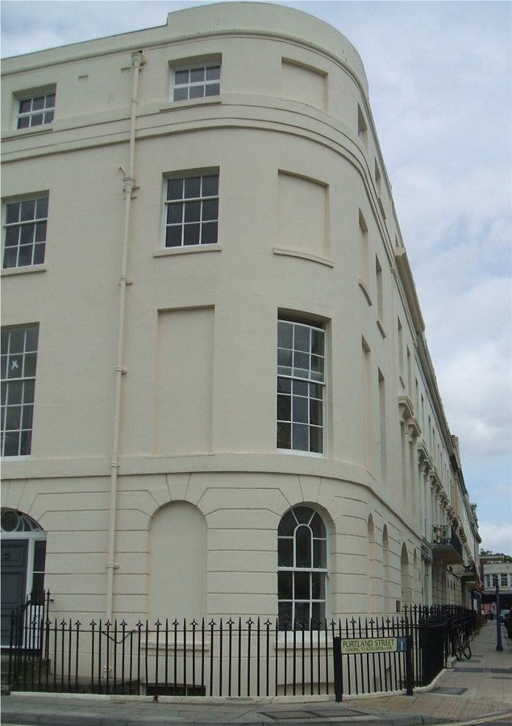
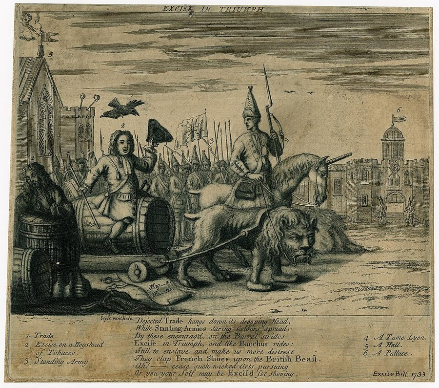
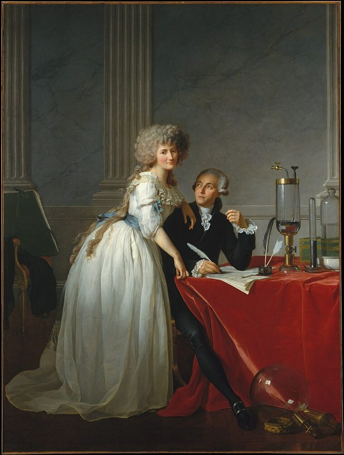

这一页在做什么
国家要花钱，钱从哪来？斯密先说君主自己做生意、收王室地租都靠不住，大头只能靠税。然后他立下四条收税的原则，拿欧洲各国几十种税逐一打分：地租税、房租税、窗户税、资本税、工资税、人头税、消费税，还有把收税包给私人的包税制。贯穿全章的是一个问题：法律叫某人交的税，最后真是他付的吗？读的时候抓两条线：四条原则；每种税最后落在谁身上。

他想证明什么
这一章近四万词，是全书最长的几章之一，要说的却可以压成两句：政府的钱只能主要靠税；而一种税最后落在谁身上，常常不是立法者想的那个人。第一部分是引子：君主自己做生意、放贷、收王室地租，都靠不住，汉堡的公营酒窖、宾夕法尼亚的纸币贷款只够小地方用。第二部分是正文：先立四条原则，再按「打算落在地租上、利润上、工资上，还是一切收入上」把税分成四类，一种一种地追问：最后谁付？合不合那四条？英国的窗户税、法国的贡税、荷兰的面包税、英国的麦芽税，都过一遍堂。欧洲各国几十种税是他的实验品，四条原则是他的评分表。
读法：§2 四条原则先读，不到两千字。§4 窗户税、§5 资本是世界公民、§7 亚麻衬衫、§9 包税人有空就读，故事和名句都在里面。§1、§3、§6、§8 是各国税制的细账，放心跳过。
斯密判断工资税、必需品税最后落在谁身上，用的是页 05 那套「工资跟着粮价走」的旧工资论，所以他说这两种税最后都由雇主、地主和富人付，还要多付一截。今天看，这套前提已经不成立。
斯密落在哪：他认为最经得起专门课税的是地租，尤其是靠国家治理才涨起来的地皮租金；对工资和必需品课税，最后由中上阶层多付一截；奢侈品税合前三条原则，却四种方式全犯第四条；包税制最糟。英国的税制不完美，但不比多数邻国差。
分节地图
这一页是卷五第 2 章，本站切成 9 节。粗体是本站起的节名；「杨译里找」后面是杨译里这一节开头附近的小标题或第一句；灰色的英文是原文这一节开头的几个词。标「先读」的是最短读法。
- 君主当不好商人所有的收入有两个来源： （1）属于君主的财产； （2）人民的收入THE revenue which must defray, not …君主自己做生意、放贷、收王室地租，为什么都靠不住。可以跳过，只看第 7–8 段：商人和君主似乎是两种最不相容的性格，东印度公司两样都没做好。
- 赋税四原则第二部分 论赋税THE private revenue of individuals, it …全章的方法和四条原则。第 23 段末句是全章要追的问题。杨译「（2）」到「（4）」三个小标题排在对应那条原则的后面，按Ⅰ到Ⅳ的编号找。
- 土地税和什一税第一项 租金税、土地地租税A TAX upon the rent of land …英国估值固定的土地税、法国学者主张的随地租变的税、各国丈量土地，可以跳过。只看第 57–59 段：什一税看着公平，其实由地主付，还挡住改良。
- 房租、地皮和窗户税房租税THE rent of a house may be …房租拆成建筑租和地皮租；第 71 段富人多交一点「不很不合理」，第 74–76 段地皮租金最该课税，第 81–84 段炉灶税和窗户税。
- 资本是世界公民第二项 利润或资本收入税THE revenue or profit arising from stock …第 90–91 段资本藏得住、跑得掉，所以难课税；第 95–97 段汉堡人自报家产，第 108 段法国农夫装穷，第 110 段「每种税都是自由的标志」。
- 遗产、印花、工资和人头第一项和第二项附录 土地、房屋和资财的资本价值税WHILE property remains in the possession …遗产税、印花税、登记税、人头税的细账，可以跳过。第 131–133 段工资税的推理靠的是过时的旧工资论，看「今天怎么看」就够。
- 一件亚麻衬衫算不算必需品消费品税THE impossibility of taxing the people, in …第 149 段亚麻衬衫和皮鞋，全章最好看的一段；第 150–155 段必需品税和奢侈品税的分别；第 173 段引斯威夫特：关税的算术里，二加二有时只得一。
- 关税、走私和麦芽税外国葡萄酒和白兰地酒以及东西印度产物在现时提供了大部分的关税收入The foreign articles, of the most …关税改革方案和麦芽税的算术，数字多来自当年的税务账目，可以跳过。第 186 段提到沃波尔的货物税计划，故事见下面。
- 包税人和荷兰的重税对奢侈品的课税不影响不在国内的人，但他们是自愿支付的这一事实使之具有价值Such taxes upon luxuries as the …第 204–211 段给奢侈品税打分，第 210 段替走私者说话；第 219–221 段骂包税人；第 224 段英法比较；第 226 段荷兰靠什么留住大商人。
先用中文过一遍：这一页的概念
这一页用到的三个概念。讲的是概念本身；每块的「今天」说今天怎么看它。工资由什么决定见页 05 的最低工资，地租从哪来见页 09 的级差地租，收入分成地租、利润、工资三块见页 03 的价格的三个组成部分。
§2税负归宿 not finally paid from the fund upon which it was intended they should fall
法律规定谁去交税，和最后谁的日子因此变紧，常常是两回事。对房东收的税，房东可能抬房租转给租客；对商店收的税，可能藏进价格转给顾客；对工人收的税，也可能逼得工资上涨，转到老板头上。最后谁吃亏，看谁更难躲开：租客搬不了家、顾客离不开这样东西、工人换不了工作，担子就多落在他们身上。经济学把这叫税负归宿，追问的是「最后谁付」，不是「谁去交钱」。斯密在第 23 段末句就点明：下面考察的许多税，最后都不是从立法者想让它落的那份收入里出的。
今天：英文叫 tax incidence，是今天公共财政的核心问题之一。经验法则是：哪一方越没有退路，税负越落在哪一方。所以不少研究发现，雇主缴的工资税大部分最后以较低的工资落回工人身上。
在这一页：第 23 段立方法；第 57 段什一税、第 69–74 段房租和地皮、第 87 和 107 段利润税、第 131–133 段工资税、第 150–155 段必需品税，都在追问最后谁付。
§2赋税四原则 four maxims with regard to taxes in general
斯密评说各种税之前先立的四条标准。一、平等：按能力出钱，也就是按各人在国家保护下享有的收入的比例。二、确定：交多少、何时交、怎么交，事先清清楚楚，不由收税的人说了算。三、便利：挑纳税人最方便的时候和办法收，比如在交租的日子收地租税。四、节省：从百姓口袋里拿走的，比交进国库的多出越少越好。第四条他列了四种「多拿」：收税官吃掉的薪俸和外快；税把人吓离本来能干的行当；逼人走私，再把走私的人罚到破产；上门查验的烦扰。这四条不是他凭空想出来的：斯密自己在脚注里引了凯姆斯勋爵 1774 年的书，Cannan 注列出了那里的六条收税通则。
今天：财政学教科书至今从这几条讲起，常称公平、确定、便利、效率。第四条里「把人吓离本来能干的行当」，今天叫超额负担（无谓损失）。「平等」今天多理解为按支付能力，常和累进税连在一起，这一层是后人加的。
在这一页：第 24–28 段立四条；第 84 段说窗户税违背第一条；第 204–211 段说奢侈品税合前三条，第四条却四样全犯。
§7必需品和奢侈品 necessaries; luxuries
斯密说的必需品分两层。一层是活命少不了的，粮食、燃料。另一层是按一国的风俗，最底层的体面人缺了就丢脸的东西，比如 18 世纪欧洲打短工的人身上那件亚麻衬衫、英格兰人脚上的皮鞋。所以必需品随地方和时代变：在苏格兰，男人非穿皮鞋不可，女人光脚却不丢脸。此外的一切他都叫奢侈品，啤酒也算，还特意说这么叫一点不带责备。分这两类是为了讲税：他认为对必需品课税会抬高工资，对奢侈品课税不会。
今天：第二层意思成了「相对贫困」的经典出处。Amartya Sen 1983 年的文章拿亚麻衬衫说明：穷不穷，要看能不能体面地出现在人前，这条线随社会富起来而上移。欧盟按中位收入的 60% 划相对贫困线，也是这个思路。
在这一页：第 149 段下定义；第 150–155 段讲两类税的不同；第 156–161 段列英国对盐、皮革、肥皂、蜡烛、海运煤的税。
故事和背景
这一页里的故事和 18 世纪的东西，按在书里出现的顺序排。
§4数窗户的税

英国先收过炉灶税：1662 年开征，每个炉灶 2 先令，收税的人得进每个房间数炉子。斯密说，这种上门的讨厌，光荣革命后不久就让它作为「奴隶的标志」被废掉（1689 年）。1696 年起改为按房子和窗户收：窗户从外面就数得清，不必进门。在杨译里找「后来按窗户的数目课税」。斯密嫌它不平等：乡下小镇一栋年租 10 镑的房子，窗户可能比伦敦年租 500 镑的还多。百姓的对策是把窗封上。经济学家 Oates 和 Schwab 2015 年翻了什罗普郡 Ludlow 的旧税册：1747–1757 年间那里的房子，正好 9 扇、14 扇、19 扇窗的格外多，再多一扇就跨进更高的一档。窗户税直到 1851 年才废。
§5汉堡的钱箱
汉堡每个居民每年要交全部家产的千分之二点五，交法是自己估：当着官员的面把钱投进公共钱箱，发誓数目没错，却不必说家产一共多少，也没人来查，据说大家交得很老实。瑞士的翁德沃尔德遭了风暴水灾，人们就聚在一起，据说各人当众说出自己有多少身家，照此分摊。斯密的解释是：小共和国里，人信得过官员，也信钱会花在正处。他马上补了一句：要汉堡的商人随时亮出家底，是最难受的事，做冒险生意的人，信用全靠别人摸不透。往下第 110 段还有一个翻转：人头税常被说成奴隶的标志，斯密说，对交税的人来说，每一种税都是自由的标志：你有财产可交税，说明你自己不是哪个主人的财产。
§8二加二等于一

第 173 段斯密引斯威夫特的话：关税的算术里，二加二有时只得一。税定得太重，人就少买，或者改买走私货，国库反倒收得少。第 186 段他说，沃波尔当年的货物税计划和自己的设想差不多，却被「派系」和走私商人掀起的叫嚷吓退了。那是 1733 年：沃波尔想把葡萄酒和烟草的关税改为货物税，让货物税官员查仓库来堵走私；反对派说货物税官的权力会伸进千家万户，伦敦街头闹成一片，4 月他撤回了法案。斯密在世时看到了另一种结局：1784 年，小皮特听了茶商 Richard Twining 的意见，把茶税从 119% 降到 12.5%，走私茶的生意大都做不下去了。少收的钱，改由加重窗户税补上，于是又有一批窗户被封。
§9包税人，和当了海关专员的斯密

法国把盐税、烟草税连同专卖权一起包给私人：包税人先付国王一笔定额，再自己雇人去收，多收的归自己。斯密说包税人对纳税人「没有心肠」，只嫌法律不够狠；盐和烟草走私每年把几百人送去划桨船服苦役，还把不少人送上绞架。当时最有名的走私头子 Louis Mandrin 带着几百人贩私烟，1755 年在瓦朗斯被处轮刑，反倒成了民间英雄。斯密自己 1778 年当上苏格兰海关专员，管的正是收关税、抓走私。他在给 William Eden 的信里说，上任一周后翻看禁止进口货的名单，吃惊地发现自己的领巾、袖边、手帕几乎没有一样不在单子上，「我想做个榜样，就全烧了」。
原典：斯密的原话
这本书是公版书，下面整段放斯密的原文，配本站的白话译。灰字说它在杨译的哪里，最后一行是这段里今天容易读错的 18 世纪词。
§2赋税四原则
全书名段，四条各取开头，第二条加上最后一句（中间删去的一句说：什么时候交、怎么交、交多少，都要清清楚楚）。在杨译关于一般赋税有四个原则后面。杨译把「（2）确定」「（3）」「（4）」三个小标题都排到了那一条的后面，按Ⅰ、Ⅱ、Ⅲ、Ⅳ开头的四段找。
I. The subjects of every state ought to contribute towards the support of the government, as nearly as possible, in proportion to their respective abilities; that is, in proportion to the revenue which they respectively enjoy under the protection of the state. The expence of government to the individuals of a great nation, is like the expence of management to the joint tenants of a great estate, who are all obliged to contribute in proportion to their respective interests in the estate. … II. The tax which each individual is bound to pay ought to be certain, and not arbitrary. … The certainty of what each individual ought to pay is, in taxation, a matter of so great importance, that a very considerable degree of inequality, it appears, I believe, from the experience of all nations, is not near so great an evil as a very small degree of uncertainty. III. Every tax ought to be levied at the time, or in the manner, in which it is most likely to be convenient for the contributor to pay it. … IV. Every tax ought to be so contrived as both to take out and to keep out of the pockets of the people as little as possible, over and above what it brings into the public treasury of the state.
本站译：一、每个国家的国民，都应当尽可能按各自的财力，也就是按各自在国家保护下享有的收入的比例，出钱维持政府。一个大国的政府开支，对国民个人来说，就像一大片产业的管理费对它的共同业主：人人都得按自己在这片产业里所占的份额分摊。……二、每个人该交的税应当是确定的，不能由人随意定。……在税收上，每个人该交多少能够确定，是极要紧的事；我相信，从各国的经验看来，相当大的不平等，远不如一丁点儿不确定那样害人。三、每一种税，都应当挑纳税人最可能方便的时候、用他最可能方便的办法去收。……四、每一种税都应当这样设计：除了真正交进国库的那一份，它从人民口袋里拿走的、和挡着人民没能挣进口袋的，越少越好。
第一条说的是按收入的「比例」，不是今天的累进。第二条斯密把确定看得比平等还重，还用 it appears, I believe 留了余地，这一点常被略过。第四条后面他列了四种「多拿」，不只征收成本，还有吓走生意、逼人走私、上门烦扰。
- abilities财力、纳税能力，不是才能
- joint tenants共同业主：几个人合有一份产业，不是佃农
- contributor纳税人，出钱的人
- arbitrary随意定的、由收税的人说了算的
§4富人多交一点，不很不合理
常被拿来证明「斯密主张累进税」的一段，这里放全上下文：他说的只是房租税。杨译把小标题对于住户，它会是非常不平等的赋税，落在富人身上最重排在了这一段后面。
The proportion of the expence of house-rent to the whole expence of living, is different in the different degrees of fortune. It is perhaps highest in the highest degree, and it diminishes gradually through the inferior degrees, so as in general to be lowest in the lowest degree. The necessaries of life occasion the great expence of the poor. They find it difficult to get food, and the greater part of their little revenue is spent in getting it. The luxuries and vanities of life occasion the principal expence of the rich; and a magnificent house embellishes and sets off to the best advantage all the other luxuries and vanities which they possess. A tax upon house-rents, therefore, would in general fall heaviest upon the rich; and in this sort of inequality there would not, perhaps, be any thing very unreasonable. It is not very unreasonable that the rich should contribute to the public expence, not only in proportion to their revenue, but something more than in that proportion.
本站译：房租在全部生活开销里占多大比例，随家境不同而不同。家境最好的，这个比例大概最高；往下一级级递减，大体上到最穷的人最低。穷人的大头开销是生活必需品：他们弄到吃的就不容易，那点微薄收入大半花在吃上。富人的主要开销是奢侈和排场；一座气派的宅子，能把他们拥有的其他种种奢侈和排场衬托得最体面。所以，房租税一般会让富人担得最重；而这种不平等，也许并没有什么很不合理的地方。富人不仅按收入的比例、而且比这个比例再多出一些来负担公共开支，并不是很不合理的事。
两处「不很不合理」加一个 perhaps，语气很弱，是对一种税的结果说「可以接受」，不是一条主张。他的前提也站不住：至少今天美国的数据正相反：劳工统计局 2000 年的统计，收入最低一档的人家，住房（房租和水电）约占开销 30%，最高一档占 22%。
- degrees of fortune家境的高低、财产的多寡
- vanities虚荣的花费、排场
- revenue（个人的）收入，不只指财政收入
§7亚麻衬衫和皮鞋
全章最好看的一段，也是「相对贫困」的经典出处。杨译把小标题必需品包括最低级的值得称赞的人为保持体面所不可缺少的东西排在了这一段后面，找它前面紧挨的那段。
By necessaries I understand, not only the commodities which are indispensably necessary for the support of life, but whatever the custom of the country renders it indecent for creditable people, even of the lowest order, to be without. A linen shirt, for example, is, strictly speaking, not a necessary of life. The Greeks and Romans lived, I suppose, very comfortably, though they had no linen. But in the present times, through the greater part of Europe, a creditable day-labourer would be ashamed to appear in public without a linen shirt, the want of which would be supposed to denote that disgraceful degree of poverty, which, it is presumed, no body can well fall into without extreme bad conduct. Custom, in the same manner, has rendered leather shoes a necessary of life in England. The poorest creditable person of either sex would be ashamed to appear in public without them. In Scotland, custom has rendered them a necessary of life to the lowest order of men; but not to the same order of women, who may, without any discredit, walk about bare-footed. In France, they are necessaries neither to men nor to women; the lowest rank of both sexes appearing there publicly, without any discredit, sometimes in wooden shoes, and sometimes bare-footed.
本站译：我说的必需品，不只是维持生命少不了的东西，还包括按一国的风俗，体面人哪怕属于最底层、缺了也不像样的一切东西。比如亚麻衬衫，严格说并不是活命所必需的。我猜，希腊人和罗马人没有亚麻布，日子也过得很舒服。可如今在欧洲大部分地方，一个体面的打短工的人，没有亚麻衬衫就不好意思出门见人：缺了它，人家会以为他穷到了丢人的地步，而大家认定，人不是行为极坏，落不到那个地步。同样，风俗也让皮鞋成了英格兰的生活必需品：最穷的体面人，不论男女，不穿皮鞋都不好意思出门。在苏格兰，风俗让皮鞋成了最底层男人的必需品，却不是同一层女人的必需品，她们光着脚走来走去，并不丢脸。在法国，皮鞋对男人女人都不是必需品：最底层的男男女女在外面有时穿木鞋，有时光着脚，谁也不觉得丢脸。
往下第 153 段口气就变了：奢侈品税对「清醒勤劳的穷人」起禁奢法的作用，「放荡胡来」的人家孩子多半夭折，所以大概不怎么减少一国有用的人口。这是 18 世纪把穷归于品行的道德口吻，不是经济规律。
- creditable体面的、名声好的；杨译「值得称赞的」偏了一点
- indecent不像样、失体面，不是「下流」
- day-labourer打短工的人，按日拿工钱
译本勘误
杨译这一章整体可靠。下面只收会把人读歪的一处。灰字是英文原文那一处的几个词；方框里是杨译的原句，在电子书里搜它。
§2共同业主，不是佃农误译
the joint tenants of a great estate
译本：「大地产的管理费用对共同佃农来说一样」
joint tenants 是英国法律用语，指几个人合有同一份产业，不是租地种的佃农。斯密的比喻是：国民是国家这份大产业的共同业主，按各自的份额分摊管理费，第一条原则「按收入比例」就从这里来。读成佃农，就像国民在向谁交租，比喻歪了。
今天怎么看
这一章的主要说法和今天的判断。每条标签判的是那条论点，五种标签的意思：
- 成立今天的经济学和证据支持这句话。
- 部分成立大方向对，细节或适用范围要改。
- 过时说的是 18 世纪的世界，当时也许对，今天的制度和技术已经变了。
- 被推翻后来的经济学或证据说明它错了。
- 有争议经济学界至今没有定论，两边各有代表性的研究。
地租，尤其是地皮租金，最经得起专门课税
地皮租金高出农地的那一截，全靠国家治理得好，课税既不会转嫁给住户，也不挫伤任何生产（第 74–76 段，他用了 perhaps）。今天看成立：土地的量不会因税而变，地价税几乎不扭曲行为；亨利·乔治 1879 年把它推成「单一税」，英国财政研究所 2011 年的 Mirrlees 报告也主张对土地价值课税。
§4 第 74–76 段资本是世界公民，查得严、课得重，它就搬走
土地搬不走，资本却能，它一走，工资和地租跟着减（第 90–91 段）。今天看成立：各国竞相降低公司税；2021 年 10 月 136 个国家和地区同意对大型跨国企业征收 15% 的全球最低税，就是给这场竞赛设底线；2026 年 1 月又让美国母公司的集团多数免于其中两条补税规则，底线已有缺口。
§5 第 90–91 段对工资和必需品课税，最后由雇主、地主和富人付，还要多付一截
斯密说工资由劳动需求和粮价决定，工人到手的实际所得压不下去，税只能推高工资（第 131–133、150–155 段）。今天看这套推理过时：工资不是粮价的影子。Gruber 1997 年研究智利，发现雇主缴的工资税全落在工人工资上；Saez 等 2019 年研究瑞典的青年减税，却没见年轻人工资变，两边都有证据。今天的消费税按收入算，通常是穷人负担更重（经合组织 2014 年的研究）。
§6、§7 第 131–155 段消费税合前三条原则，第四条却四种方式全犯
征收的官员多、吓走生意、逼人走私、上门烦扰（第 206–211 段）。今天看部分成立：这张单子就是今天说的征收成本和超额负担，斯密想得很全；但他骂的是税率高、名目杂、由腐败官员征收的旧关税。今天税基宽、税率平的增值税，经合组织 2010 年的研究认为对增长的伤害比所得税和公司税小。
§9 第 204–211 段书里的说法：窗户税的毛病主要是不平等，其他三条原则它似乎都没怎么违背
- 书里
- 第 84 段：乡下 10 镑的房子可能比伦敦 500 镑的窗户还多，所以它直接违背第一条；对另外三条，他用 seem 说似乎都没怎么违背。第 85 段又说，窗户税本来会压低房租，可需求涨得更快，房租照样涨。
- 当时
- 1775 年的英格兰，每扇窗按房子窗户多少收 2 便士到 2 先令，另加每栋房子 3 先令。
- 今天
- 「不平等」这一半成立：1850 年议会辩论里说，伦敦小房子交的窗户税约占房租三成，大宅约占 5%。「不违背第四条」这一半不成立：Oates 和 Schwab 2015 年查了 Ludlow 的旧税册，房子的窗户数在免税线和每一档的门槛下面扎堆，封窗换来的是更暗、更不通风的屋子；他们粗算，这种扭曲造成的损失约为所收税款的 14%，正落在斯密第四条的第二种「多拿」里。核对于 2026-10。依据：Oates & Schwab, The Window Tax: A Case Study in Excess Burden, Journal of Economic Perspectives, 2015；Lincoln Institute of Land Policy 的介绍文章。
斯密主张累进税吗
主流看法：两边都爱引他：一边拿第 71 段证明斯密支持「富人多交」，一边拿第 25 段的「按比例」当单一税率的祖师。
斯密的看法：第 25 段是按收入的比例；第 71 段只就房租税说，富人多交一点「也许」不算很不合理；第 76 段说对靠国家良治涨起来的地皮租金专门课税，再合理不过；第 190 段说只该对下层人民的奢侈消费、不该对他们的必需消费课税。
本站的评论：他的方向是让富人和坐享其成的收入多担一点，用的工具却是房租、地皮和奢侈品，不是今天的累进所得税：英国 1799 年才有所得税。Cannan 注里凯姆斯勋爵的第四条明说要「减轻穷人、加重富人」，斯密的四条原则偏偏没收这一条。把他算进哪一派都说过头。
本站的总体看法：这一章不必通读：§2 一定要读，§4、§5、§7、§9 挑故事和名句读。四原则至今是财政学的起点，「最后谁付」的追问就是今天的税负归宿。他对具体哪种税落在谁身上的判断，靠旧工资论的要打折扣；靠「土地跑不了、资本跑得了」的，今天仍然站得住。
精彩回顾
隔几周回来时看这里。想不起来，点节号回到那一节。
一句话：收税要平等、确定、便利、节省，还要追问：税最后落在谁身上。
平等、确定、便利、节省。斯密还说，相当大的不平等，也远不如一丁点儿不确定害人。
§2窗户税从外面就能数，不用进门。百姓就把窗封上：18 世纪中叶 Ludlow 有 9 扇窗的房子特别多，多一扇就得按窗交税。
§4地搬不走，资本搬得走。今天的全球最低税，是在给各国抢资本的减税竞赛设底线。
§5必需品包括体面人缺了就丢脸的东西：亚麻衬衫、皮鞋。苏格兰的女人光脚不丢脸，男人不行。
§7